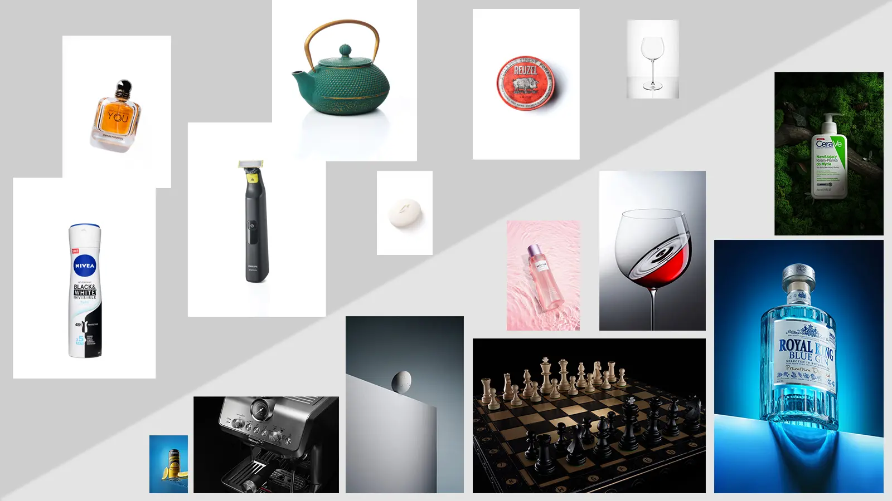
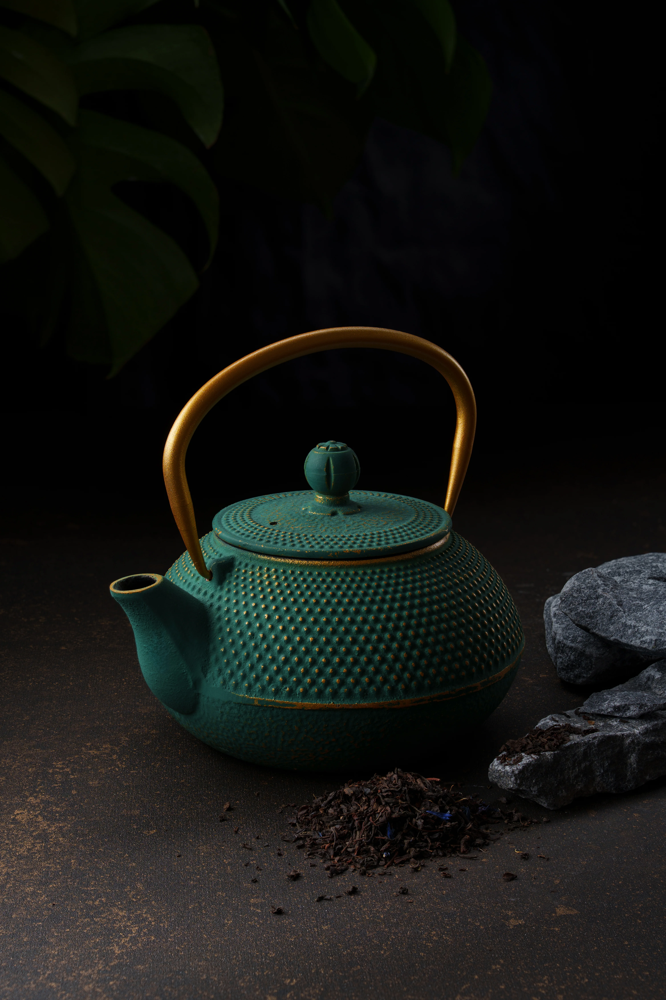
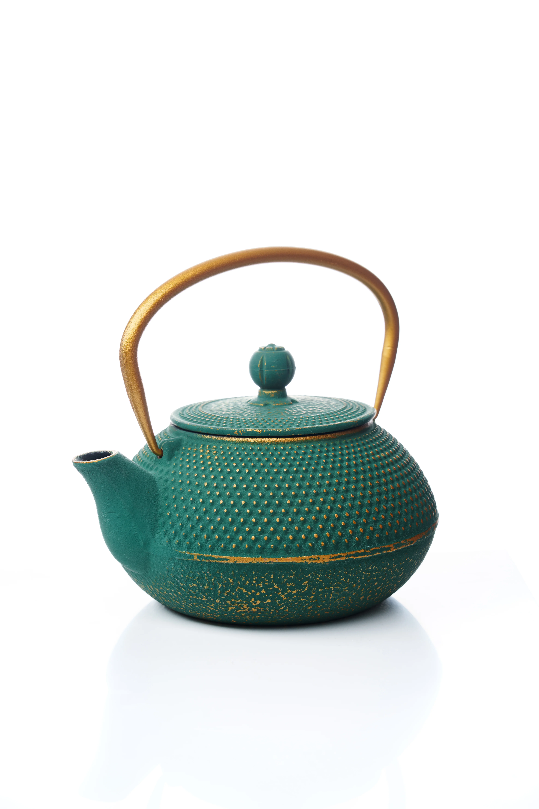

Kiedy wybrać zdjęcia katalogowe, a kiedy reklamowe?
Autor: ObjeqtiveWarszawa

Zdjęcia katalogowe vs reklamowe — jak wybrać właściwy format?
Klient coraz rzadziej decyduje na podstawie samej ceny lub opisu.
Pierwsze wrażenie tworzą zdjęcia. I liczy się nie
tylko ich jakość, ale także format:
zdjęcia katalogowe albo zdjęcia reklamowe. Oba
rozwiązania mają inne cele i zastosowania — dobranie właściwego
formatu pozwala nie przepłacić i osiągnąć lepszy efekt
sprzedażowy.
Zdjęcia katalogowe — kiedy są najlepsze?
To zdjęcia produktu na neutralnym, najczęściej białym tle. Ich
rolą jest klarownie pokazać produkt
bez rozpraszaczy: kształt, kolor, proporcje, detale.
Gdzie sprawdzają się zdjęcia katalogowe?
karty produktów w e-commerce (Allegro, Amazon, własny sklep),
katalogi i porównania wariantów,
marketplace`y z wymaganiami dot. tła i kadrów.
Plusy: uniwersalność, spójność, szybkie tempo
realizacji i korzystna cena.
Zdjęcia reklamowe — kiedy będą lepsze?
To ujęcia kreacyjne: praca światłem, rekwizyty,
faktury, kolor. Celem jest wywołanie emocji i
zbudowanie kontekstu użycia produktu. Idealne do kampanii i social
mediów.
Gdzie stosować zdjęcia reklamowe?
strony główne i landing pages,
banery, plakaty, outdoor i print,
social media, kampanie Meta Ads/Google Ads.
Plusy: wyróżnienie na tle konkurencji, spójny
styl marki, wyższa „pamiętalność”.
Ten sam produkt — dwa efekty

Wersja reklamowa — atmosfera, charakter i emocja, które budują
markę.

Wersja katalogowa — maksymalna czytelność i porównywalność.
Koszty i terminy — czym się różnią?
Katalog: szybciej, taniej, standaryzacja kadrów
i świateł.
Reklama: przygotowania (rekwizyty, stylizacja),
testy światła i aranżacja — drożej, ale efekt
brand value.
Jak wybrać i czy można łączyć?
Jeśli celem jest masowe wdrożenie oferty do sklepu i
marketplace`ów — zacznij od
zdjęć katalogowych. Jeżeli budujesz kampanię i
chcesz zwrócić uwagę odbiorcy — postaw na
zdjęcia reklamowe. Praktycznie najskuteczniejsza
jest kombinacja: katalog jako podstawa sprzedaży
+ kilka kadrów reklamowych do banerów i social mediów.
Podsumowanie
Zdjęcia katalogowe i reklamowe nie konkurują —
uzupełniają się. Pierwsze zapewniają jasność i
porównywalność, drugie tworzą emocję i styl. Połączenie obu
formatów daje najlepszy stosunek efektu do kosztu w
e-commerce.